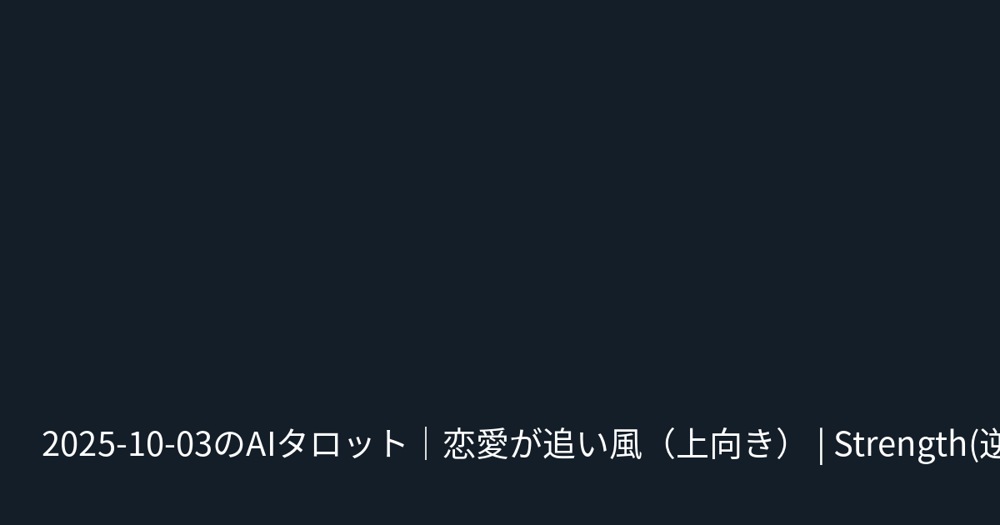

タイトル: 2025-10-03のAIタロット｜恋愛が追い風（上向き） | Strength(逆)・The Fool(逆)・Justice(逆)
タグ: タロット, AI占い, 恋愛運, NOTE自動生成

# 今日のAIタロット占い (2025-10-03) ## スコア - 恋愛運: ★★★★☆ - 仕事運: ★★★☆☆ - 健康運: ★★★★☆ - 総合運: ★★★☆☆ ## 今日のカード - Strength（逆位置） - The Fool（逆位置） - Justice（逆位置） ## ラッキー - 色: 青 - アイテム: ハンカチ --- ### アドバイス 感情の波に流されず、冷静な判断を意識すると良い一日です。